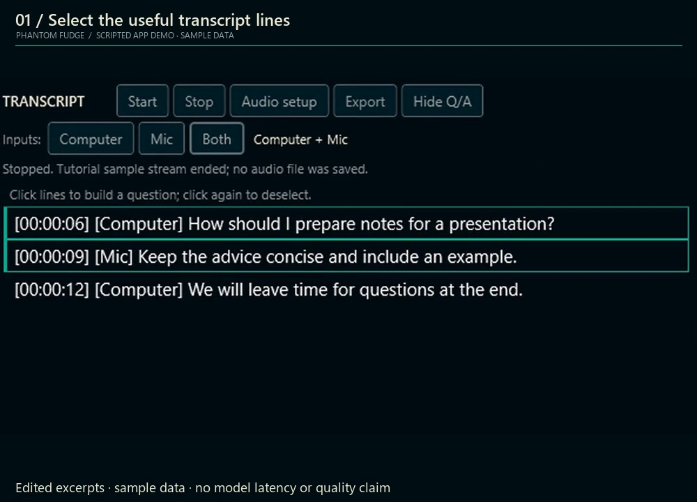
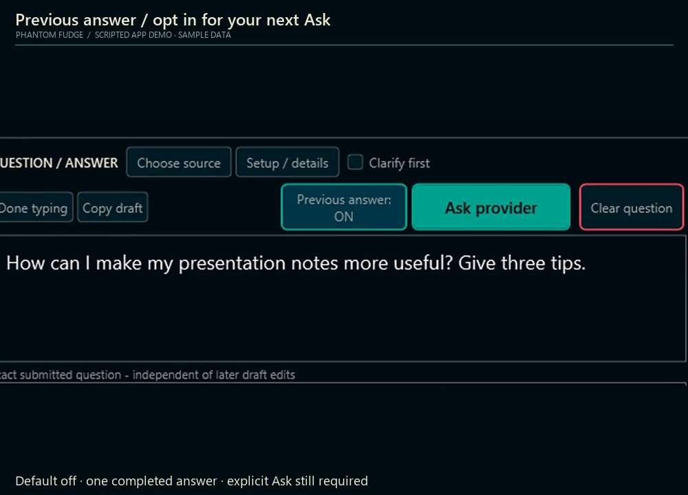
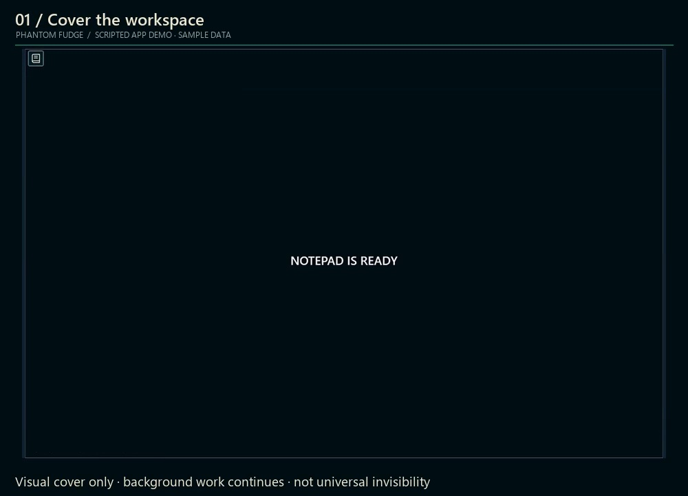
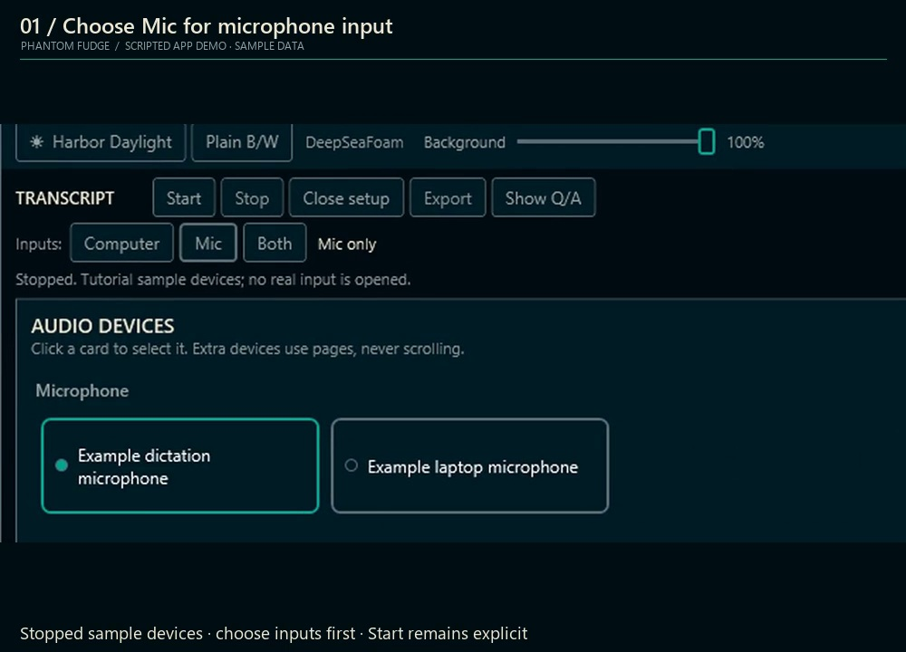
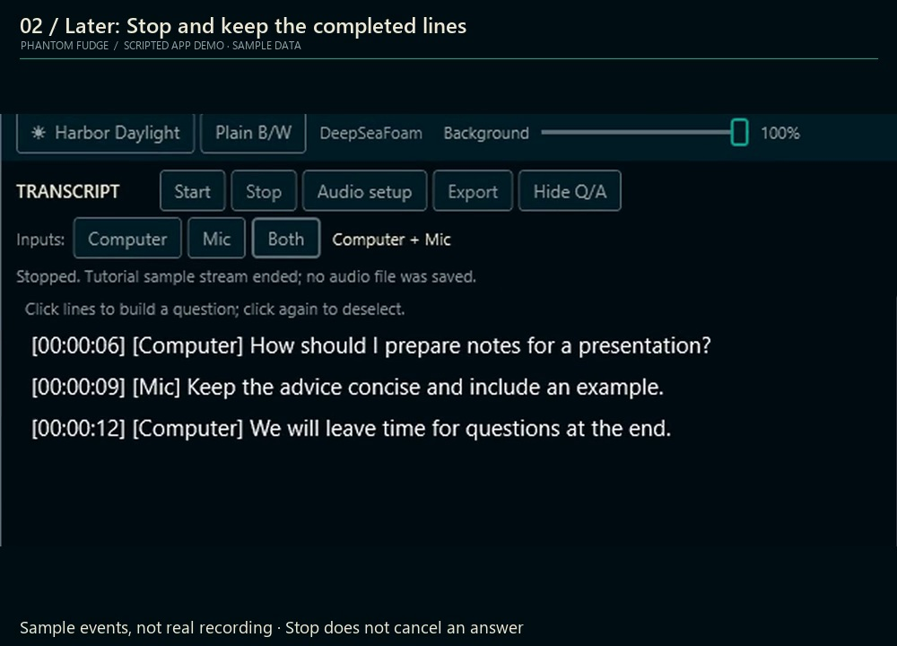
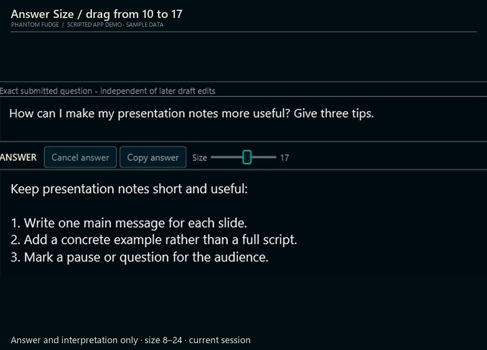
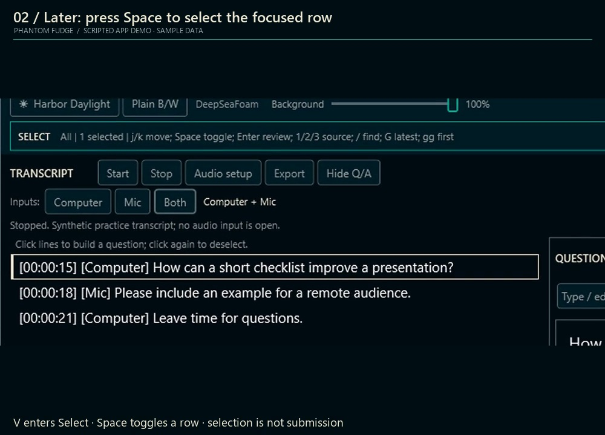
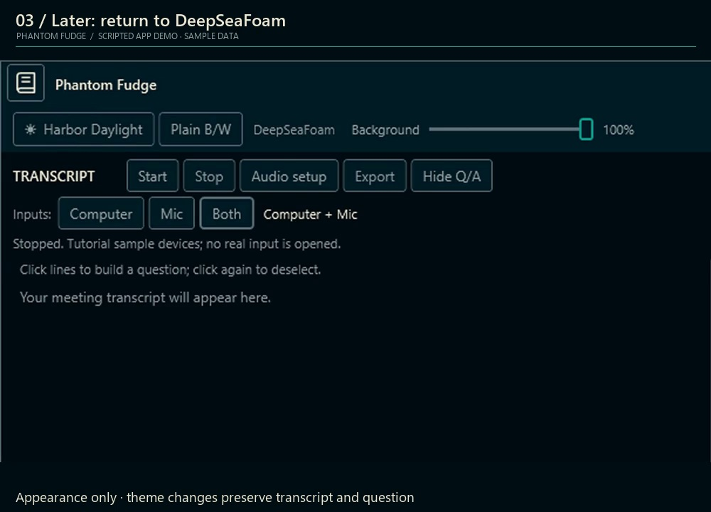

01 / YOUR WORDS
Select. Then Ask.
Choose useful transcript lines. Nothing is sent until you explicitly Ask.
A QUIETER KIND OF PRESENCE
Speaker notes. Local transcription.
Answers only when you ask.
Windows 11 x64 Unsigned preview Capture exclusion has limits
BEHIND THE VEIL
Eight quick demos. Pick one.

Choose useful transcript lines. Nothing is sent until you explicitly Ask.

Optionally include the last answer with a follow-up. One snapshot, not automatic history.

Show a plain notepad cover. Audio and answers keep running.

Computer, Mic or Both. Selecting an input does not start capture.

Start explicitly, follow the transcript, then Stop when you are done.

Adjust answer text with the session-only size slider.

Enter Select mode and mark transcript rows with the keyboard.

DeepSeaFoam, Harbor Daylight or Plain. Same workspace, different feel.
Edited sample-data clips at 1×; not live meetings or response-time measurements. Clip details
THE COMPLETE WALKTHROUGH
38 min / 15 chapters / 194 lessons
Full tutorial, web-optimized. Captions included; extra captions add a larger layer.
Tutorial: current source. Previous-answer context is not in the published preview installer.
Actual WPF frames with scripted sample inputs and answers, not a live meeting or model response. Click and keyboard guides illustrate actions; they are not physical mouse footage.
Installer, file-picker and provider steps are instructions, not recorded operations. These examples do not establish capture compatibility.
Synthetic narration: Microsoft Zira Desktop. No music.
Media provenance ↗